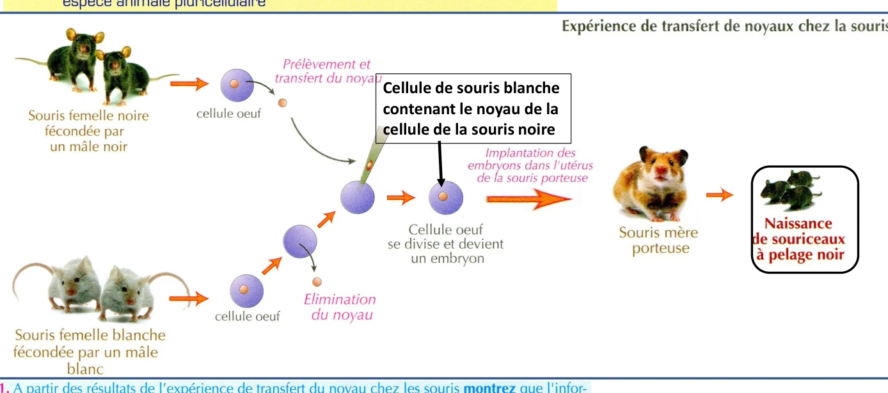
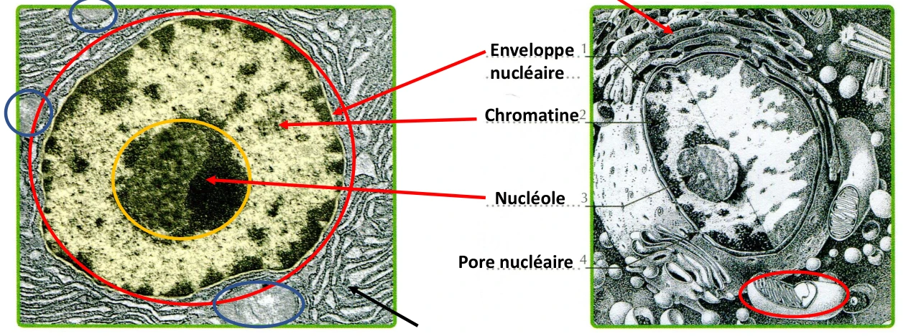

Localisation de l’information génétique
Explore les expériences pas à pas, puis relie les résultats à la structure de la cellule. Choisis une étape pour approfondir.
L’acétabulaire : de l’hypothèse à la conclusion
Une seule cellule forme le chapeau, la tige et le rhizoïde. Le noyau est situé dans le rhizoïde.
Étape 1 / 3
Le transfert de noyau chez la souris
1. On retire le noyau d’une cellule œuf issue de souris blanches.
2. On introduit le noyau d’une cellule œuf issue de souris noires.
3. L’embryon est implanté dans l’utérus d’une mère porteuse.
Avant d’afficher le résultat, prévois la couleur du pelage si le noyau détermine ce caractère.

Explorer le noyau en interphase
Clique sur une structure pour la repérer et comprendre ce qu’elle représente.

Eucaryotes et procaryotes
| Critère | Eucaryotes | Procaryotes |
|---|---|---|
| Noyau délimité par une enveloppe | Présent | Absent |
| Information génétique | Présente, notamment dans le noyau | Présente, ADN non enfermé dans un noyau |
| Exemples du cours | Cellules animales et végétales, acétabulaire | Bactéries |
Éviter une confusion : une bactérie n’a pas de noyau délimité par une enveloppe, mais elle possède bien de l’information génétique.
Les cellules végétales et animales sont toutes deux eucaryotes. La cellule végétale du cours présente une paroi ; la cellule animale présentée n’en possède pas.
L’interphase entre deux mitoses
Interphase : intervalle de temps qui sépare deux mitoses successives.
La cellule n’est pas au repos : elle se développe et prépare notamment la division suivante. Dans le noyau observé au cours de cette période, la chromatine se présente sous forme de nucléofilaments.
Succession : mitose → interphase → mitose.
La mitose conduit à deux cellules filles. L’étude détaillée de ses étapes appartient à la suite du cours.
Reprendre l’analyse guidée →Pour t’évaluer, retrouve Info1 dans Quiz SVT depuis Mon Espace SVT.